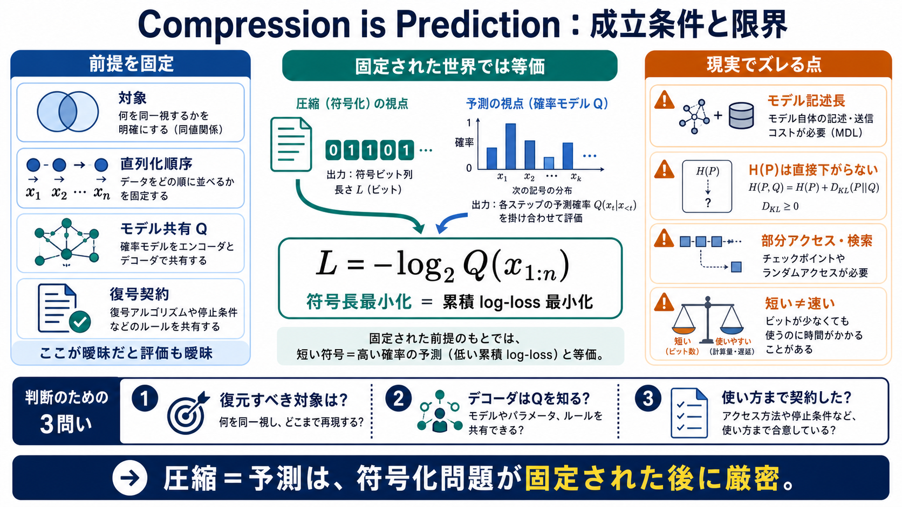

Target / 対象
どのオブジェクト集合（同値類）を符号化対象にするか

圧縮と予測の一致点
「圧縮＝予測（compression is prediction）」は、いつ厳密に成り立ち、どこからスローガンになるのかを、等価な量と前提条件に分解して整理する。
等価性がブレる理由
「圧縮の良さ」と「予測の良さ」が同じ最適化になるには、表現対象・直列化順序・モデル共有・復号契約を先に固定する必要がある。
固定された世界
既定の確率モデル \(Q\) を「順序付き系列モデル」として合意し、系列 \(x_{1:n}\) を理想符号（算術符号等）で符号化すると、符号長は \(-\log_2 Q(x_{1:n})\) になる。
一致する最適化
同じ合意 \(Q\) の下では、「圧縮（ビット数最小）」と「予測（log-loss最小）」は同じ最適化問題になる。
本質：前に決める
現実の「圧縮」は、確率モデル適用の前にすでに分岐している。どの同値性を許すか、直列化する順序は何かが、符号化設計を決める。
学習は別コスト
\(Q\) を学習して使う場合、符号長に加えて「デコーダが再現できるだけのモデルの記述長」も別途コストになりうる。
log-lossは何を下げる
log-loss改善は一般に元分布のエントロピー \(H(P)\) を直接下げるとは限らない。多くはクロスエントロピーと、その中のミスマッチ（KL）を下げている。
prequentialの発想
逐次更新（prequential等）では、パラメータ記述長を別に払う代わりに、オンライン予測の劣化として符号長に織り込むという見方ができる。
圧縮だけでは足りない
最短ビット列だけで評価すると、データ構造が要求するアクセス要件（ランダムアクセス、部分復号、検索）まで満たせない。
同じ圧縮率でも別物
ビット詰めとエントロピー符号では、アクセスの容易さが変わる。圧縮率だけでは「使える形」になっているか判定できない。
カウント版の見方
ゼロ次経験エントロピーを「確率（最尤推定のlog-loss）」で説明する方法と、「型クラスの個数を数える」方法は、大きい極限でほぼ同じコストを与える。
スローガンの正しい解像度
「圧縮＝予測」は“符号化問題が固定された後”には正確に等価だが、契約（対象・直列化・モデル共有・復号要件）が暗黙に固定されていない限り不十分になる。
判断のための3問い
次の3点を満たすほど、「予測を良くする＝圧縮を良くする」の解釈が強くなる。
理想理論の基礎
本整理の核は「理想符号長＝モデル確率の負の対数」から始まり、KL分解、モデル記述長（MDL）、復号契約（アクセス要件）へと分岐していく。
No references found